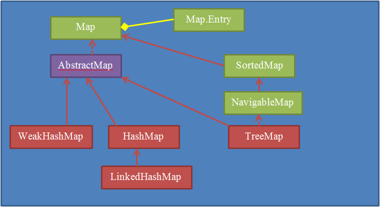

- Привет, Амиго!
- Привет, Билаабо!
- Сегодня у нас будет не просто интересная, я прямо-таки эпическая тема.
Сегодня я расскажу тебе, что такое шаблоны проектирования (design patterns).
- Круто. Много про них слышал. Жду с нетерпением.
- Опытным программистам приходится писать очень много классов. Но самая сложная часть этой работы – это решать, какие классы должны быть и как распределить работу между ними.
Чем чаще они решали такие вопросы, тем чаще стали понимать, что существуют некоторые удачные решения, и наоборот, неудачные.
Неудачные решения обычно создают проблем больше, чем решают. Они плохо расширяются, создают много лишних ограничений, и т.п. А удачные решения – наоборот.
- А можно какую-нибудь аналогию?
- Допустим, ты строишь дом. И думаешь - из чего же он должен состоять. Ты решил, что тебе нужны стены, пол и потолок. В результате ты построил дом без фундамента и с ровной крышей. Такой дом будет трескаться, а крыша – протекать. Это – неудачное решение.
И наоборот, дом, состоящий из фундамента, стен и двускатной крыши – будет удачным решением. Ему нестрашны ни большие снегопады (снег будет скатываться с крыши), ни подвижки почвы – фундамент будет обеспечивать стабильность. Такое решение мы назовем удачным.
- Ясно. Спасибо.
- Ок. Тогда я продолжу.
Со временем сборник удачных решений объявили «паттернами (шаблонами) проектирования», а сборник неудачных – антипаттернами.
Сам шаблон проектирования - это как бы ответ на вопрос. Его сложно понять, если не слышал самого вопроса.
Первая категория паттернов – это порождающие паттерны. Такие паттерны описывают удачные решения, связанные с созданием объектов.
- А что такого сложного в создании объектов?
- А вот как рез сейчас мы это и разберем.
Паттерн Singleton – Синглетон, Одиночка.
Часто в программе некоторые объекты могут существовать только в единственном экземпляре. Например, консоль, логгер, сборщик мусора и т.д.
Неудачное решение: отказаться от создания объектов, просто создать класс у которого все методы статические.
Удачное решение: создать единственный объект класса и хранить его в статической переменной. Запретить создание второго объекта этого класса. Пример:
| Пример |
|---|
| class Sun { private static Sun instance; public static Sun getInstance() { if (instance == null) instance = new Sun(); return instance; } private Sun() { } } |
| Как вызвать |
| Sun sun = Sun.getInstance(); |
Все просто.
Во-первых, мы сделали конструктор private. Теперь его можно вызвать только изнутри нашего класса. Мы запретили создание объекта Sun везде кроме методов класса Sun.
Во-вторых, получить объект этого класса можно только вызвав метод getInstance(). Это не только единственный метод, который может создавать объекты класса Sun, но он еще и следит, чтобы такой объект был единственным.
- Ясно.
- Когда человек думает – как же именно это сделать? Паттерн говорит – можешь попробовать так – это одно из удачных решений.
- Спасибо. Теперь что-то начинает проясняться.
- Так же про этот паттерн можно прочитать здесь.
Паттерн Factory – Фэктори, Фабрика.
Очень часто программисты сталкиваются вот с какой ситуацией. У тебя есть некоторый базовый класс и много подклассов. Например – персонаж игры – GamePerson и классы всех остальных персонажей игры, унаследованные от него.
Допустим, у тебя есть такие классы:
| Пример |
|---|
| abstract class GamePerson { } class Warrior extends GamePerson { } class Mag extends GamePerson { } class Troll extends GamePerson { } class Elv extends GamePerson { } |
Вопрос состоит в том – как гибко и удобно управлять созданием объектов этих классов.
Если проблема кажется тебе надуманной, представь, что в игре нужно создавать десятки мечей и щитов, сотни магических заклинаний, тысячи монстров. Без удобного подхода к созданию объектов тут не обойтись.
Вот какое «удачное решение» предлагает паттерн Фабрика (Factory)
Во-первых, надо завести enum, значения которого будут соответствовать различным классам.
Во-вторых, сделать специальный класс – Factory, у которого будет статический метод или методы, которые и будут заниматься созданием объекта(ов) в зависимости от enum'а.
Пример:
| Пример |
|---|
| public enum PersonType { UNKNOWN, WARRIOR, MAG, TROLL, ELV, } public class PersonFactory { public static GamePerson createPerson(PersonType personType) { switch(personType) { WARRIOR: return new Warrior(); MAG: return new Mag(); TROLL: return new Troll(); ELV: return new Elv(); default: throw new GameException(); } } } |
| Как вызвать |
| GamePerson person = PersonFactory.createPerson(PersonType.MAG); |
- Т.е. мы создали специальный класс для управления созданием объектов?
- Ага.
- А какие преимущества это дает?
- Во-первых, там эти объекты можно инициализировать нужными данными.
Во-вторых, между методами можно сколь угодно передавать нужный enum, чтобы в конце-концов по нему создали правильный объект.
В третьих, количество значений enum не обязательно должно совпадать с количеством классов. Типов персонажей может быть много, а классов – мало.
Например, для Mag & Warrior можно использовать один класс – Human, но с различными настройками силы и магии (параметрами конструктора).
Вот как это может выглядеть (для наглядности добавил еще темных эльфов):
| Пример |
|---|
| public enum PersonType { UNKNOWN, WARRIOR, MAG, TROLL, ELV, DARK_ELV } public class PersonFactory { public static GamePerson createPerson(PersonType personType) { switch(personType) { WARRIOR: return new Human(10, 0); //сила, магия MAG: return new Human(0, 10); //сила, магия TROLL: OGR: return new Troll(); ELV: return new Elv(true); //true – добрый, false – злой DARK_ELV: return new Elv(false); //true – добрый, false - злой default: throw new GameException(); } } } |
| Как вызвать |
| GamePerson person = PersonFactory.createPerson(PersonType.MAG); |
В примере выше мы использовали всего три класса, чтобы создавать объекты шести разных типов. Это очень удобно. Более того, у нас вся эта логика сосредоточена в одном классе и в одном методе.
Если мы вдруг решим создать отдельный класс для Огра, мы просто поменяем тут пару строк кода, а не будет перелопачивать половину приложения.
- Согласен. Удачное решение.
- А я тебе о чем говорю, шаблоны проектирования – это сборники удачных решений.
- Знать бы еще, где их применять…
- Ага. Сходу не разберёшься, согласен. Но все равно, лучше знать и не уметь, чем не знать и не уметь. Вот тебе еще полезная ссылка по этому паттерну: Паттерн Factory
- О, спасибо.
- Паттерн Abstract Factory – Абстрактная Фабрика.
Иногда, когда объектов очень много, напрашивается создание фабрики фабрик. Такую фабрику принято называть Абстрактной Фабрикой.
- Это ж где такое может понадобиться?
- Ну, например, у тебя есть несколько групп идентичных объектов. Это легче показать на примере.
Смотри, допустим, у тебя в игре есть три расы – люди, эльфы и демоны. И у каждой расы, для баланса есть воин, лучник и маг. В зависимости от того, за какую сторону играет человек, он может создавать только объекты своей расы. Вот как это могло бы выглядеть в коде:
| Объявление классов войск |
|---|
| class Warrior { } class Archer { } class Mag { } |
| Люди |
| class HumanWarrior extends Warrior { } class HumanArcher extends Archer { } class HumanMag extends Mag { } |
| Эльфы |
| class ElvWarrior extends Warrior { } class ElvArcher extends Archer { } class ElvMag extends Mag { } |
| Демоны |
| class DaemonWarrior extends Warrior { } class DaemonArcher extends Archer { } class DaemonMag extends Mag { } |
А теперь создадим расы, ну или можно еще назвать их армиями.
| Армии |
|---|
| abstract class Army { public Warrior createWarrior(); public Archer createArcher(); public Mag createMag(); } |
| Армия людей |
| class HumanArmy extends Army { public Warrior createWarrior() { return new HumanWarrior(); } public Archer createArcher() { return new HumanArcher(); } public Mag createMag() { return new HumanMag(); } } |
| Армия эльфов |
| class ElvArmy extends Army { public Warrior createWarrior() { return new ElvWarrior(); } public Archer createArcher() { return new ElvArcher(); } public Mag createMag() { return new ElvMag(); } } |
| Армия демонов |
| class DaemonArmy extends Army { public Warrior createWarrior() { return new DaemonWarrior(); } public Archer createArcher() { return new DaemonArcher(); } public Mag createMag() { return new DaemonMag(); } } |
- А как это использовать?
- Можно везде в программе использовать классы Army, Warrior, Archer, Mag, а для создания нужных объектов – просто передавать объект нужного класса-наследника Army.
Пример:
| Пример |
|---|
| Army humans = new HumanArmy(); Army daemons = new DaemonArmy(); Army winner = FightSimulator.simulate(humans, daemons); |
В примере выше, у нас есть класс, который симулирует бои между разными расами (армиями), и ему нужно просто передать два объекта Army. С их помощью он сам создает различные войска и проводит виртуальные бои между ними, с целью выявить победителя.
- Ясно. Спасибо. Действительно интересный подход.
Удачное решение, что ни говори.
- Ага.
Вот еще хорошая ссылка по этой теме: Паттерн Abstract Factory
- Привет, друг!
- Привет, Билаабо!
- У нас еще осталось немного времени, поэтому я расскажу тебе про еще три паттерна.
- Еще три, а сколько их всего?
- Ну, сейчас есть несколько десятков популярных паттернов, но количество «удачных решений» не ограничено.
- Ясно. И что, мне придется учить несколько десятков паттернов?
- Пока у тебя нет опыта реального программирования, они дадут тебе не очень много.
Ты лучше поднаберись опыта, а потом, через годик, вернись к этой теме и попробуй разобраться в них более основательно. Хотя-бы пару десятков самых популярных.
Грех не пользоваться чужим опытом и самому что-то изобретать в очередной 110-й раз.
- Согласен.
- Тогда начнем.
Паттерн Adapter(Wrapper) – Адаптер (Обертка)
Представь, что ты приехал в Китай, а там другой стандарт розеток. Отверстия не круглые, а плоские. Тогда тебе понадобится переходник, или другими словами – адаптер.
В программировании тоже может быть что-то похожее. Они оперируют похожими, но различными интерфейсами. И надо сделать переходник между ними.
Вот как это может выглядеть:
| Пример |
|---|
| interface Time { int getSeconds(); int getMinutes(); int getHours(); } interface TotalTime { int getTotalSeconds(); } |
Допустим, у нас есть два интерфейса – Time и TotalTime.
Интерфейс Time позволяет узнать текущее время с помощью методов getSeconds(), getMinutes() и getHours().
Интерфейс TotalTime позволяет получить количество секунд, которое прошло от полночи до текущего момента.
Что делать, если у нас есть объект типа TotalTime, а нужен Time и наоборот?
Для этого мы можем написать классы-адаптеры. Пример:
| Пример |
|---|
| class TotalTimeAdapter implements Time { private TotalTime totalTime; public TotalTimeAdapter(TotalTime totalTime) { this.totalTime = totalTime; } int getSeconds() { return totalTime.getTotalSeconds() % 60; //секунды } int getMinutes() { return totalTime.getTotalSeconds() / 60; //минуты } int getHours() { return totalTime.getTotalSeconds() / (60*60); //часы } } |
| Как пользоваться |
| TotalTime totalTime = TimeManager.getCurrentTime(); Time time = new TotalTimeAdapter(totalTime); System.out.println(time.getHours()+":"+time.getMinutes()+":"+time.getSeconds()); |
И адаптер в другую сторону:
| Пример |
|---|
| class TimeAdapter implements TotalTime { private Time time; public TimeAdapter(Time time) { this.time = time; } int getTotalSeconds() { return time.getHours()*60*60+time.getMinutes()*60 + time.getSeconds(); } } |
| Как пользоваться |
| Time time = new Time(); TotalTime totalTime = new TimeAdapter(time); System.out.println(time.getTotalSeconds()); |
- Ага. Мне нравится. А примеры есть?
- Конечно, например, InputStreamReader – это классический адаптер. Преобразовывает тип InputStream к типу Reader.
Иногда этот паттерн еще называют обертка, потому что новый класс как бы «оборачивает» собой другой объект.
Другие интересные вещи почитать можно тут.
Паттерн Proxy - Заместитель
Паттерн прокси чем-то похож на паттерн обертка. Но его задача – не преобразовывать интерфейсы, а контролировать доступ к оригинальному объекту, сохраненному внутри прокси-класса. При этом и оригинальный класс и прокси обычно имеют один и тот же интерфейс, что облегчает подмену объекта оригинального класса, на объект прокси.
Пример:
| Интерфейс реального класса |
|---|
| interface Bank { public void setUserMoney(User user, double money); public int getUserMoney(User user); } |
| Реализация оригинального класса |
| class CitiBank implements Bank { public void setUserMoney(User user, double money) { UserDAO.updateMoney(user, money); } public int getUserMoney(User user) { return UserDAO.getMoney(user); } } |
| Реализация прокси-класса |
| class BankSecurityProxy implements Bank { private Bank bank; public BankSecurityProxy(Bank bank) { this.bank = bank; } public void setUserMoney(User user, double money) { if (!SecurityManager.authorize(user, BankAccaunts.Manager)) throw new SecurityException("User can’t change money value"); bank.setUserMoney(User user, double money); } public int getUserMoney(User user) { if (!SecurityManager.authorize(user, BankAccaunts.Manager)) throw new SecurityEsception("User can’t get money value"); return bank.getUserMoney(User user); } } |
В примере выше мы описали интерфейс банка – Bank, и одну его реализацию – CitiBank.
Этот интерфейс позволяет получить или изменить количество денег на счету пользователя.
А потом мы создали BankSecurityProxy, который тоже реализует интерфейс Bank и хранит в себе ссылку на другой интерфейс Bank. Методы этого класса проверяют: является ли данный пользователь менеджером банка, и если нет – то кидает исключение безопасности – SecurityException.
Вот как это работает на деле:
| Код без проверки безопасности: |
|---|
| User user = AuthManager.authorize(login, password); Bank bank = BankFactory.createUserBank(user); bank.setUserMoney(user, 1000000); |
| Код с включённой проверкой безопасности: |
| User user = AuthManager.authorize(login, password); Bank bank = BankFactory.createUserBank(user); bank = new BankSecurityProxy(bank); bank.setUserMoney(user, 1000000); |
В первом примере мы создаем объект банк и вызываем у него метод setUserMoney.
Во втором примере – мы оборачиваем оригинальный объект банк в объект BankSecurityProxy. Интерфейс у них один, так что дальнейший код как работал, так и работает. Но теперь при каждом вызове метода будет происходить проверка безопасности.
- Круто!
- Ага. Таких прокси может быть много. Например, можно добавить еще один прокси, который будет проверять – не слишком ли большая сумма. Может менеджер банка решил положить себе на счет кучу денег и сбежать с ними на Кубу.
Более того. Создание всех этих цепочек объектов можно поместить в класс BankFactory и подключать/отключать нужные из них.
По похожему принципу работает BufferedReader. Это Reader, но который делает еще дополнительную работу.
Такой подход позволяет «собирать» из «кусочков» объект нужной тебе функциональности.
Чуть не забыл. Прокси используются гораздо шире, чем я только что тебе показал. Об остальных типах использования ты можешь почитать здесь.
Паттерн Bridge – Мост
Иногда, в процессе работы программы, надо сильно поменять функциональность объекта. Например, был у тебя в игре персонаж осел, а потом маг превратил его в дракона. У дракона совсем другое поведение и свойства, но(!) это – тот же самый объект.
- А нельзя просто создать новый объект и все?
- Не всегда. Допустим, твой осел был в друзьях у кучи персонажей, или например, на нем были наложены некоторые заклинания, или он участвовал в каких-то квестах. Т.е. этот объект уже может быть задействован в куче мест и привязан к куче других объектов. Так что просто создать новый другой объект в этом случае – не вариант.
- И что же делать?
- Одним из наиболее удачных решений есть паттерн Мост.
Этот паттерн предлагает разделить объект на два объекта. На «объект интерфейса» и «объект реализации».
- А в чем отличие от интерфейса и класса, который его реализует?
- В случае с интерфейсом и классом в результате будет создан один объект, а тут - два. Смотри пример:
| Пример |
|---|
| class User { private UserImpl realUser; public User(UserImpl impl) { realUser = impl; } public void run() //бежать { realUser.run(); } public void fly() //лететь { realUser.fly(); } } class UserImpl { public void run() { } public void fly() { } } |
А потом можно объявить несколько классов наследников от UserImpl, например UserDonkey(осел) и UserDragon(дракон).
- Все равно не очень понял, как это будет работать.
- Ну, примерно так:
| Пример |
|---|
| class User { private UserImpl realUser; public User(UserImpl impl) { realUser = impl; } public void transformToDonkey() { realUser = new UserDonkeyImpl(); } public void transformToDragon() { realUser = new UserDragonImpl(); } } |
| Как это работает |
| User user = new User(new UserDonkey()); //внутри мы – осел user.transformToDragon(); //теперь внутри мы – дракон |
- Чем-то напоминает прокси.
- Да, только в прокси главный объект мог храниться где-то отдельно, а код работал с прокси-объектами вместо него. Здесь же предлагается, что все работают именно с главным объектом, а меняются его внутренние части.
- Ага. Спасибо. А дашь ссылку почитать еще про это?
- Конечно, друг Амиго. Держи: Паттерн Bridge
- Привет, Амиго!
- Привет, Элли!
- Сегодня я хочу рассказать тебе про итераторы.
Итераторы придумали практически тогда, когда и коллекции. Основная задача коллекций была – хранить элементы, а основная задача итератора – выдавать эти элементы по одному.
- А что сложного в том, чтобы выдать набор элементов?
- Во-первых, некоторые коллекции, как например Set не имеют установленного порядка элементов и/или он постоянно меняется.
Во-вторых, некоторые структуры данных могут хранить объекты очень сложно: различными группами, списками и т.д. Т.е. отдать последовательно все элементы – это будет сложная нетривиальная задача.
В третьих – коллекции имеют свойство меняться. Решил ты вывести на экран все содержимое коллекции, а прямо в середине вывода JVM переключилась на другую нить, которая половину элементов из этой коллекции заменила на другую. Вот и получишь ты вместо вывода не пойми-что.
- М-да.
- Вот! Именно такие проблемы должен был решить итератор. Итератор – это специальный внутренний объект в коллекции, который с одной стороны имеет доступ ко всем ее private данным и знает ее внутреннюю структуру, с другой – реализует общедоступный интерфейс Iterator, благодаря чему все знают, как с ним работать.
Некоторые итераторы имеют внутри себя массив, куда копируются все элементы коллекции, во время создания итератора. Это гарантирует, что последующее изменения коллекции не повлияет на порядок и количество элементов.
Думаю, ты уже сталкивался, что при работе с for each нельзя одновременно «идти по коллекции циклом» и удалять из нее элементы. Это все именно из-за устройства итератора.
В новых коллекциях, добавленных в библиотеке concurrency, устройство итератора переработано, поэтому там такой проблемы нет.
Давай я тебе напомню, как устроен итератор.
В Java есть специальный интерфейс Iterator, вот какие у него методы:
| Методы интерфейса Iterator<E> | Описание |
|---|---|
| boolean hasNext() | Проверяет – есть ли еще элементы |
| E next() | Возвращает текущий элемент и переключается на следующий. |
| void remove() | Удаляет текущий элемент |
Итератор позволяет поочередно получить все элементы коллекции. Логичнее представить итератор чем-то вроде InputStream – у него есть все данные, но его задача выдавать их последовательно.
Метод next() возвращает следующий (очередной) элемент коллекции.
Метод hashNext() используется, чтобы проверять – есть ли еще элементы.
Ну, а remove() – удаляет текущий элемент.
Вопросы есть?
- А почему методы называются так странно? Почему не isEmpty() или getNextElement()?
Разве так не логичнее?
- Логичнее, но такие названия пришли из языка C++, где итераторы появились раньше.
- Ясно. Продолжим.
Кроме итератора есть еще интерфейс Iterable – его должны реализовывать все коллекции, которые поддерживают итератор. У него есть единственный метод:
| Методы interface Iterable<T> | Описание |
|---|---|
| Iterator<T>iterator() | Возвращает объект-итератор |
С помощью этого метода у любой коллекции можно получить объект итератор для обхода ее элементов. Давай обойдем все элементы дерева в коллекции TreeSet:
| Пример |
|---|
| TreeSet<String> set = new TreeSet<String>(); Iterator<String> iterator = set.iterator(); while (iterator.hasNext()) { String item = iterator.next(); System.out.println(item); } |
Такое использование итератора не очень удобно – слишком много лишнего и очевидного кода. Ситуация упростилась, когда в Java появился цикл по итератору – for-each.
Теперь такой код гораздо компактнее и читабельнее:
| Было | Стало |
|---|---|
| TreeSet<String> set = new TreeSet<String>(); Iterator<String> iterator = set.iterator(); while (iterator.hasNext()) { String item = iterator.next(); System.out.println(item); } |
TreeSet<String> set = new TreeSet<String>(); for(String item : set) { System.out.println(item); } |
Это один и тот же код! Итератор используется и там и там.
Просто в цикле for-each его использование скрыто. Обрати внимание – в коде справа вообще нет красного цвета. Использование итератора скрыто полностью.
Цикл for-each можно использовать для любых объектов, которые поддерживают итератор. Т.е. ты можешь написать свой класс, добавить ему метод iterator() и сможешь использовать его объекты в правой части конструкции for-each.
- Ого! Я, конечно, не рвусь писать собственные коллекции и итераторы, но предложение все равно заманчивое. Возьму на карандаш.
- Кроме того, есть еще одна популярная разновидность итераторов, что ей даже придумали свой интерфейс. Речь идет о итераторе для списков – ListIterator.
Списки, независимо от реализации обладают порядком элементов, что в свою очередь позволяет работать с ними через итератор чуть более удобно.
Вот какие методы есть у интерфейса ListIterator<E>:
| Метод | Описание |
|---|---|
| boolean hasNext() | Проверяет – есть ли еще элементы впереди. |
| E next() | Возвращает следующий элемент. |
| int nextIndex() | Возвращает индекс следующего элемента |
| void set(E e) | Меняет значение текущего элемента |
| boolean hasPrevious() | Проверяет – есть ли элементы позади. |
| E previous() | Возвращает предыдущий элемент |
| int previousIndex() | Возвращает индекс предыдущего элемента |
| void remove() | Удаляет текущий элемент |
| void add(E e) | Добавляет элемент в конец списка. |
Т.е. тут мы можем ходить не только вперед, но и назад. И еще пара фич по мелочи.
- Что ж, интересная штука. А где его используют?
- Например, ты хочешь двигаться туда-обратно по связному списку. При этом операция get будет довольно медленной, а операция next() очень быстрой.
- Хм. Убедила. Буду иметь ввиду.
Спасибо, Элли!
- Привет, дружище. Держи свою интересную задачу.
| Задачи |
|---|
|
1. Круговой итератор Класс Solution наследуется от ArrayList. Напишите свой класс RoundIterator внутри Solution, который будет итератором для списка Solution. Итератор должен ходить по кругу по всем элементам. В остальном поведение должно быть идентичным текущему итератору. |
- Подожди, мне тут звонят
- Алло... Угу... Да... Фабрика... Что там с этой фабрикой??? Алло, алло!
- Амиго, мне звонил капитан, про какую-то фабрику говорил и про агента секретного. Ты же мой друг, правда? Сходи к этому агенту IntelliJ IDEA, узнай, что там за дела с фабрикой. Только тсс, никому не говори.
- Да знаю я этого секретного агента, вмести столько часов провели. Не беспокойся, уже иду.
- Ну, и напоследок – расскажу о Map.
Map, как ты знаешь, хранит набор пар «ключ-значение». Ключи должны быть уникальны, значение – любые. Если ты добавляешь в Map пару ключ-значение, а такой ключ в коллекции уже есть, то старое значение заменится на новое. Т.е. ключ – это что-то вроде уникального индекса, который может быть любым объектом.
Как только название Map не переводится на русский язык. Их существует уже, наверное, десятка полтора. Самые распространённые – это Словарь, Карта, Отображение, …
Название Map – это математический термин, который обозначает набор (множество) пар (x,y), где каждому уникальному x соответствует какой-то y.
Программисты очень любят Map, поэтому у нас тут аж 4 различных коллекции, реализующих интерфейс Map:
Вот тебе ее простенькая структура наследования:
Желтым отмечено, что Entry – это вложенный интерфейс в интерфейсе Map.
Entry был добавлен, чтобы описать именно пару элементов как одну сущность.
Вот какие методы есть у Map<K,V>:
| Методы | Описание |
|---|---|
| int size() | Возвращает количество пар в map. |
| boolean isEmpty() | Проверяет – пустой ли map. |
| boolean containsKey(Object key) | Содержит ли map заданный ключ? |
| boolean containsValue(Object value) | Содержит ли map заданное значение? |
| V get(Object key) | Возвращает значение по ключу. |
| V put(K key, V value) | Устанавливает новое значение ключу. Метод возвращает старое значение или null |
| putAll(Map<? extends K, ? extends V> m) | Добавляет пары из другого map. |
| void clear() | Очищает map – удаляет все пары. |
| Set<K>keySet() | Возвращает Set из ключей. |
| Collection<V>values() | Возвращает коллекцию из значений. |
| Set<Map.Entry<K, V>>entrySet() | Возвращает множество (Set) пар. |
K,V – это типы-параметры для ключей (Key) и значений(Value).
- Ну, с большинством методов я знаком, хотя работал только с некоторыми из них.
А что еще за Entry такой?
- Это класс, который описывает пару элементов. Методов у него немного:
| Методы | Описание |
|---|---|
| K getKey() | Возвращает значение «ключа пары». |
| V getValue() | Возвращает значение «значения пары». |
| V setValue(V value) | Устанавливает новое значение «значения пары». |
Entry удобен тем, что ты можешь взять какую-то пару и передать ее в нужный метод, не передавая туда всю коллекцию map.
- Ясно.
- Ну, и пробегусь еще по реализациям Map.
Первая на очереди – это коллекция HashMap. Она использует хэш-таблицы для хранения элементов. Ключи и значения могут быть любых типов, а так же могут быть null. Порядок элементов может меняться при изменении коллекции.
Элементы хранятся внутри HashMap в виде набора групп – корзин (bucket). В какую корзину попадет элемент, зависит от значения его hashCode().
Очень грубо говоря, элементы со значением хэш-кода от 1 до 100 попадает в первую корзину, со значением от 101 до 200 во вторую, и т.д.
Смысл такого хранения в том, что при поиске/удалении можно отбрасывать ненужные корзины, и исключать все их элементы из рассмотрения.
- Ясно.
- Есть очень хорошая статья по HashMap, советую почитать http://habrahabr.ru/post/128017/
Вторая коллекция – это LinkedHashMap. Основное ее отличие от HashMap – она дополнительно хранит элементы в виде связного списка. У обычной HashMap порядок элементов неопределён и, строго говоря, может меняться со временем. А у LinkedHashMap можно получить итератор и с помощью него перебрать все элементы в порядке их добавления в LinkedHashMap. Так же у LinkedHashMap есть итератор, который позволяет обойти все пары в порядке из последнего использования/активности.
Есть очень хорошая статья по HashMap, держи http://habrahabr.ru/post/129037/
Третья коллекция, о которой я бы хотела сегодня рассказать – это TreeMap.
TreeMap хранит свои элементы отсортированными по возрастанию. Это достигается благодаря тому, что TreeMap для их хранения использует сбалансированное красно-черное бинарное дерево.
Благодаря этому там очень низкое время вставки и поиска элементов. Этот класс – отличный выбор при использовании очень больших объемов данных.
Ну и, конечно же, статья по TreeMap: http://www.quizful.net/post/Java-TreeMap
Что я еще не рассказала?
- WeakHashMap, но мне Риша рассказывал про него пару дней назад.
- Это когда?
- Ну, когда рассказывала про SoftReference, WeakReference и PhantomReference.
- Верю, учитывая, что ты все правильно назвал. Тогда иди отдыхай. Вечером увидимся.
- Пока, Элли.
| Задачи |
|---|
| 1. Найти класс по описанию 1. Реализует интерфейс Map 2. Используется при работе с трэдами 3. Неблокирущая версия списка с пропусками, который адаптирован для хеш-таблицы. Про список с пропусками читать в дополнительном материале к этой лекци |
| 2. Фикс бага В Вашем большом проекте повсеместно используется метод getExpectedMap. В какой-то момент тестеры обнаружили, что метод getExpectedMap выбрасывает NullPointerException. Ожидаемое поведение описано в комментарии метода main. Найдите другую стандартную реализацию интерфейса Map, верните объект этого типа в getExpectedMap вместо TreeMap. Метод main должен отработать без исключений. Метод main не менять. |
| 3. Ambiguous behavior for NULL Измените реализацию метода getExpectedMap, он должен вернуть объект такого класса, для которого будет противоположное поведение при добавлении ссылки null. См. пример вывода в методе main. Остальной код не менять. |
- Привет, Амиго!
Как прошли утренние лекции?
- Да прилично так, я тебе скажу.
Билаабо дал кучу паттернов проектирования, Элли кучу всего по коллекциям. Не простой выдался денек.
- Ничего, зато я тебя сильно ничем нагружать не стану.
Хочу рассказать тебе про два утилитных класса, с которыми ты уже сталкивался.
Это классы Arrays и Collections. Все их методы статические и предназначены для работы с коллекциями и массивами.
Начну с более простого – Arrays. Вот его методы:
| Методы и их описание |
|---|
| List<T>asList(T... a) |
| Возвращает неизменяемый список, заполненный переданными элементами. |
| int binarySearch(int[] a, int fromIndex, int toIndex, int key) |
| Ищет элемент (key) в массиве a или подмассиве, начиная с fromIndex и до toIndex. Массив должен быть отсортирован! Возвращает номер элемента или fromIndex-1, если элемент не найдет. |
| int[] copyOf(int[] original, int newLength) |
| Возвращает под массив original массива, newLength элементов, начиная с нулевого. |
| int[] copyOfRange(int[] original, int from, int to) |
| Возвращает под массив original массива, начиная с from и до to. |
| boolean deepEquals(Object[] a1, Object[] a2) |
| Глубокое сравнение массивов. Массивы считаются равными, если равны их элементы. Если элементы сами являются массивами, для них тоже выполняется глубокое сравнение. |
| int deepHashCode(Object a[]) |
| Глубокий хэшкод на основе всех элементов. Если элемент является массивом, для него также вызывается deepHashCode. |
| String deepToString(Object[] a) |
| Глубокое преобразование к строке. Для всех элементов вызывается toString(). Если элемент является массивом, для него тоже выполняется глубокое преобразование к строке. |
| boolean equals(int[] a, int[] a2) |
| Сравнивает два массив а поэлементно. |
| void fill(int[] a, int fromIndex, int toIndex, int val) |
| Заполняет массив (или подмассив) заданным значением. |
| int hashCode(int a[]) |
| Вычисляет общий hashCode всех элементов массива. |
| void sort(int[] a, int fromIndex, int toIndex) |
| Сортирует массив (или подмассив) по возрастанию. |
| String toString(int[] a) |
| Преобразовывает массив к строке. Для всех элементов вызывается toString(); |
- А что, очень полезные методы, многие мне бы пригодились.
- Хочу еще заметить, что я тут привел не все методы. Почти все методы из таблицы дублируются для всех примитивных типов. Т.е. если написано String toString(int[] a), то так же есть методы String toString(boolean[] a), String toString(byte[] a), String toString(long[] a), String toString(float[] a), String toString(double[] a), String toString(char[] a).
- Так это же меняет дело. Теперь это, ну просто незаменимый класс.
- Рад, что тебе понравилось. Тогда продолжим после перерыва.
- Амиго, сейчас я дам тебе всего одну задачу, но очень крутую! Ты такого еще никогда не делал, это верх мастерства! Где же она... эээ... Ну... Вобщем, иди и реши те задачи, которые у тебя еще не решены. Отдохни и приходи в следующий раз, я как раз ее найду для тебя.
- А вот и я.
- Я уже давно тебя тут жду.
- Надеюсь. Тогда продолжим.
Представляю тебе супер-мега навороченный утилитный класс для коллекций.
- Я уже весь дрожу.
- Отлично. Тогда начнем. Вот методы класса Collections:
| Методы и их описание |
|---|
| boolean addAll(Collection<? super T> c, T... elements) |
| Добавляет переданные элементы в переданную коллекцию. Удобно использовать в виде Collections.addList(list, 10,11,12,13,14,15) |
| Queue<T>asLifoQueue(Deque<T> deque) |
| Возвращает «обычную очередь», сделанную из «обратной очереди». |
| int binarySearch(List<? extends T> list, T key, Comparator<? super T> c) |
| Ищет с помощью двоичного поиска элемент keyв списке list. Список должен быть отсортирован. Можно задать компаратор для сравнения элементов. |
| Collection<E>checkedCollection(Collection<E> c, Class<E> type) |
| Проверяет, что все элементы коллекции «с» определенного типа «type». Аналогичные методы существуют для List, Map, Set и SortedSet. |
| void copy(List<? super T> dest, List<? extends T> src) |
| Копирует список «src»в список «dest». |
| boolean disjoint(Collection<?> c1, Collection<?> c2) |
| Проверяет, что коллекции не содержат общих элементов |
| void fill(List<? super T> list, T obj) |
| Заполоняет список list, элементом obj |
| int frequency(Collection<?> c, Object o) |
| Подсчитывает сколько раз в коллекции «с» встречается объект «o» |
| int indexOfSubList(List<?> source, List<?> target) |
| Определяет индекс, с которого в списокsource входит список target как подпоследовательность. Принцип аналогичен String.indexOf("somestring") |
| int lastIndexOfSubList(List<?> source, List<?> target) |
| Определяет последний индекс, с которого в список source входит список target как подпоследовательность. Аналогичен String.lastIndexOf("somestring") |
| T max(Collection<? extends T> coll) |
| Ищет максимальное число/значение в коллекции. Как найти максимум из 6-и чисел? Collections.max(Arrays.asList(51, 42, 33, 24, 15, 6)); |
| T min(Collection<? extends T> coll) |
| Ищет минимальное значение в коллекции. |
| List<T>nCopies(int n, To) |
| Создает фиктивную коллекцию, которая выглядит так, как будто в ней «n» раз встречается элемент «o». |
| boolean replaceAll(List<T> list, T oldVal, T newVal) |
| Заменяет в коллекции list все элементы oldVal на newVal |
| void reverse(List<?> list) |
| Разворачивает список задом наперед. |
| void shuffle(List<?> list) |
| Перемешивает элементы списка случайным образом. |
| List<T>singletonList(To) |
| Возвращает неизменяемый список, состоящий из одного переданного элемента. Аналогичные методы существуют для Map, Set и SortedSet. |
| void sort(List<T> list) |
| Сортирует список по возрастанию. |
| void swap(List<?> list, int i, int j) |
| Меняет элементы списка местами |
| Collection<T>synchronizedCollection(Collection<T> c) |
| Оборачивает данную коллекцию в ее синхронизированный аналог. Аналогичные методы существуют для List, Map, Set и SortedSet. |
- Ничего себе! Да это же целый арсенал, а я и десятой части не использовал.
- Собственно на этом моя сегодняшняя лекция и заканчивается.
Посмотри эти методы, найти те, которые, скорее всего, будешь использовать.
А еще лучше – выучи. Они тебе пригодятся.
- Спасибо тебе, Риша. Пойду учить.
- Привет, Амиго. Держи полезную задачу:
| Задачи |
|---|
| 1. Давно забытый Array Реализуйте логику метода getData так, чтобы main отработал без исключений. Остальной код не менять |
- Вспомнил! Вот задача, которую я обещал тебе в прошлый раз. Знаешь, что такое SET?
- Уже давно знаю, да и Риша только что рассказывал про утилитный класс Collections.
- SET - это Super Extreme Task, супер экстремальная задача. Что тебе про нее рассказывал Риша?
- Ээ, он мне про другое рассказывал... про полезные методы для коллекций.
- Про другое?? Ладно, на условие, иди решай. Только не решай эту задачу на листочках. Видел я, как ты себе что-то там записываешь. Нужно сразу в карту памяти писать.
- Так а где мне ее решать?
- Иди к секретному агенту, у него точно для тебя что-то найдется.
- Привет, Амиго!
Продолжаем наши уроки – учимся гуглить.
Вот тебе несколько заданий:
| Надо найти в Google | |
|---|---|
| 1 | Паттерны проектирования |
| 2 | Паттерн Singleton |
| 3 | Реализация паттерна Singleton в Java |
| 4 | Что такое UML |
| 5 | UML примеры |
| 6 | Паттерн Factory и AbstractFactory |
| 7 | Паттерн Proxy |
| 8 | Паттерн Bridge |
| 9 | Паттерн Adapter |
| 10 | Антипаттерны |
- Привет, Амиго!
Вот тебе дополнительный материал по теме.
- Привет, Амиго!
- Привет, Хулио.
- Ну как? Выучил паттерны проектирования?
- Выучил - не выучил, но точно ознакомился.
- Вот и отлично. После тяжелой умственной работы нужно отдыхать. Ты присаживайся, а я найду, что посмотреть.
- Привет, Амиго!
| Вопросы к собеседованиям | |
|---|---|
| 1 | Что такое паттерны проектирования? |
| 2 | Какие паттерны проектирования вы знаете? |
| 3 | Расскажите про паттерн Singleton? Как сделать его потокобезопасным? |
| 4 | Расскажите про паттерн Factory |
| 5 | Расскажите про паттерн AbstractFactory |
| 6 | Расскажите про паттерн Adaper, его отличия от Wrapper? |
| 7 | Расскажите про паттерн Proxy |
| 8 | Что такое итератор? Какие интерфейсы, связанные с итератором, вы знаете? |
| 9 | Зачем нужен класс Arrays? |
| 10 | Зачем нужен класс Collections? |
- Привет, боец!
- Поздравляю тебя с повышением уровня квалификации. Нам нужны отчаянные парни.
- Уверен, у тебя есть еще много нерешенных задач. Самое время решить парочку из них!